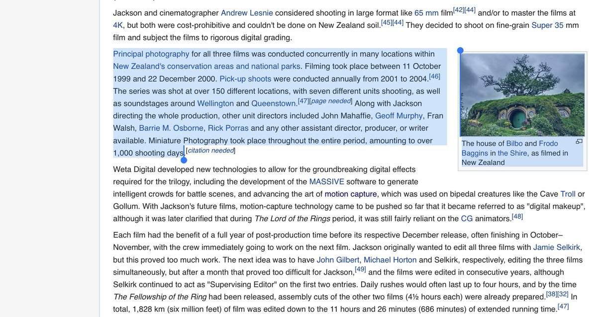

98. Hypercomplexity 🔗
August 15, 2022
In which I coin hypercomplexity — systems so vast and heterogeneous they deserve a fat Robert Caro book — using Peter Jackson's LOTR production as exhibit A, marveling at the breadth-first architectural intelligence required to wrangle thousands of moving parts across dozens of modes simultaneously.
🔗
The LOTR movies are now 18-21y old. Entire generation born after them is headed for college 🤯
Watched the first part (Fellowship) and then read the Wikipedia on the production. This thing was the Apollo program of film. The Lord of the Rings (film series) - Wikipedia
Watched the first part (Fellowship) and then read the Wikipedia on the production. This thing was the Apollo program of film. The Lord of the Rings (film series) - Wikipedia

🔗
$281m in, 3B out
150 locations
7 units
438 days principal photography, 1000 total
2400 people involved at height of production
48,000 pieces of armour, 10,000 arrows, 500 bows, 10,000 Orc heads, 1,800 pairs of Hobbit feet-shoes, 19,000 costumes
Production of The Lord of the Rings film series - Wikipedia
150 locations
7 units
438 days principal photography, 1000 total
2400 people involved at height of production
48,000 pieces of armour, 10,000 arrows, 500 bows, 10,000 Orc heads, 1,800 pairs of Hobbit feet-shoes, 19,000 costumes
Production of The Lord of the Rings film series - Wikipedia
🔗
Rewatching last m=night I was struck by how huge this achievement was. Jurassic Park was the Mercury missions. This skipped Viking.
It was as big a leap over ILM tech of Jurassic Park era as ILM had been over trad 80s tech. They basically invented a new era of FX.
It was as big a leap over ILM tech of Jurassic Park era as ILM had been over trad 80s tech. They basically invented a new era of FX.
🔗
And the capital raise had to deal with Harvey Weinstein assholery along the way and it might have turned into a horrible 1 or 2 film treatment driven by scared bean counters if New Line hadn’t rescued the project from Miramax and let Jackson go all out.
🔗
Concurrently shooting 3 major movies at once and keeping the architecture coherent and startlingly true to the books (at least by my standards) across this country-scale project over 438 days, when Jackson was apparently sleeping just 4h/day…
🔗
This is systems engineering at its finest. The filming was radically out of order and fragmented due to logistics complexity apparently. Some scenes had shots filmed a year apart. Yet the in-story chronology flows beautifully. The temporal continuity must have been nightmarish.
🔗
To compare to another mixer complex systems engineering marvel, iirc it takes perhaps 30m and ~150-250 people involved to design and tape out a modern computer chip (not including the fab capital) (@magicsilicon might have a better rough number). So LOTR was about 10x complexity
🔗
Unlike the other path-breaking movie of the time, the Matrix, this was very well-known material with pre-existing strong visual anchors, so it’s amazing that what came out looked so vast and awe-inspiring while largely staying true to expectations of what it should look like
🔗
Anecdote that struck me: Ian McKellan didn’t bond much with the hobbit actors since he interacted more with the scale body doubles.
Another: some sets built at 2 scales, one for human and elf, another for hobbits and dwarves. They picked slightly taller dwarf actors to avoid 3.
Another: some sets built at 2 scales, one for human and elf, another for hobbits and dwarves. They picked slightly taller dwarf actors to avoid 3.
🔗
They shot the road-to-Bree scene first where the hobbits hide from the Ringwraith, to give them a chance to bond
There’s a gazillion little details like this. I’d honestly watch 8h long making-of miniseries.
There’s a gazillion little details like this. I’d honestly watch 8h long making-of miniseries.
🔗
I can’t even imagine the top-level narrative architecture problem: unbundling the books into a storyboard, then screenplays (Fran Walsh described the screenwriting as laying track in front of a moving train), and then keeping the out-of-order production Gantt chart straight.
🔗
In many ways this was a bigger achievement than MCU. MCU is 10x bigger in scale (40 films?) but is relatively much looser material, more forgiving tonally (humor > drama) and done in a far better tech era 10-20y later, with far more mature CGI. It’s also more uneven.
🔗
Another detail: crew assembling the plastic chain mail wore out their thumbprints. The sheer grind of assembling thousands of bits of chain mail…
And finer touches too…like a jeweler designing Arwen’s pendant thing. Takes a Galaxy brain to keep priorities/proportions straight.
And finer touches too…like a jeweler designing Arwen’s pendant thing. Takes a Galaxy brain to keep priorities/proportions straight.
🔗
The contrast between LOTR and Hobbit trilogies underlines the importance of a) right-sizing the creative canvas for the material b) the difference missionary design idealism makes to architectural integrity. LOTR was Mac, Hobbit was Windows Vista era PC. Cathedral vs Junkspace.
🔗
Similar contrast between MCU affectionate narrative ramp with time gif each character and the disaster that was DC’s Justice League superhero role-call that even Zach Snyder cut could not redeem. You have to care more about the story than the money or you get narrative Junkspace.
🔗
One of the reasons LOTR is unique is it's a rare true trilogy, not spilling over into 4, 5, 7, 10 books. Beyond 3-4 volumes of a single core storyline, I think you are forced to go to prestige TV to get it right. Nobody has patience for 3+ movies in a straight-line story.
🔗
MCU works because it's a poset rather than a straight line story.
Foundation, Wheel of Time, etc. had to go to TV. LOTR prequel based on Silmarillon material too... more TV than movies.
Dune is the exception. A zillion books, but only like the first 2.5 are any good.
Foundation, Wheel of Time, etc. had to go to TV. LOTR prequel based on Silmarillon material too... more TV than movies.
Dune is the exception. A zillion books, but only like the first 2.5 are any good.
🔗
Reading Terra Ignota now. I think that would work as a trilogy (it's 4 books). Recently read Lillith's Brood. Also trilogy suitable. And Schismatrix Plus perhaps. In fantasy... any major material that stops at 3ish and hasn't been done? I think Gormenghast perhaps.
🔗
3 movies is really optimal for a single storyline. Another that nails the medium-story fit is the Nolan Batman trilogy. Original Raimi Spider-Man tried, but unravelled completely in the third part. By the time we got to Avengers, the extended universe context made it different.
🔗
I actually can't think of any single storyline movie series that worked to 4+ parts. Things like James Bond are more like sitcoms in that they are episodic stand-alone stories within an unchanging context (though latest Bond thing tried a bit of extended universe long-arc-ing)
🔗
I'll never cease to be impressed by a single human brain grappling with the limits of heterogenous complexity at vast scale, across dozens of modes.
🔗
The key is heterogeneity. The complexity here is arguably of a higher order than of what say a mathematician like Grothendieck wrangled into submission, since that is a kind of cognitive monoculture inside a savant brain. Ditto people who architect say big pieces of software.
🔗
What kind of brain can keep a zillion moving parts of different types in its head with auteur rigor like this? Story, vast laboring crew, actors, top creative lieutenants, props, fx tech, capital raising politicking, schmoozing governments, field infrastructure...
🔗
I can keep fairly big piles of ideas and thoughts in my head, but it's... just thoughts, and even with that least forgiving of material, I can't reach these scales of mental heavy lifting. Even with the best project management discipline.
🔗
And note the sheer time pressure. Many CEOs run more complex empire, but they do so one quarter at a time at a steady tempo for years on end, with no definite expectations. This was an intense 438 day heavy lift where 90% of the complexity was being wrangled all at once.
🔗
I'd say during that one core production year, Peter Jackson was probably operating at like 3x Steve Jobs or Musk-level. A one-rep max, but still. I'm surprised he didn't break down into a screaming nutjob by the end of it.
🔗
It's easy to get into flow if you mainly do 1 kind of thing in 1 kind of workflow. And once you get into flow, output is a simple function of raw physical energy/stamina and your leverage scaffolding. But doing it with 10 kinds of thing in 10 kinds of workflows is 1000x harder
🔗
There should be a term for this. Something like breadth-first heavy-lift architectural intelligence. It's not IQ, it's a different trait. I've met people with genius levels of this, and they tend to be above average intelligence in trad terms, but not geniuses.
🔗
"Architecture" is not quite it though. There's a full-stack, end-to-end quality to the thinking that architects of any sort typically lack. Talented architects are good at laying out strategic contours and key tactical details. But not heavy lifts like this.
🔗
Like Tolkien himself would count as an excellent architect. But he worked primarily in a single strategic medium, the text. Closer to mathematics than epic cinema. On balance, I'd say making the films was a greater achievement than writing the books.
🔗
Speaking of Tolkien, I recall an interview where he said he was often asked why the eagles couldn't just drop the ringbearer into mordor, and he said his response was "oh... shut up!" (good humoredly). Elegant architecture can get away with logic fails in a way movies can't.
🔗
I wonder what the most full-spectrum complex thing humans do that is driven by a single individual. I think it's a three-way dead heat between bleeding edge space missions, complex movies, and computer hardware (bottom half of stack from silicon to low-level system software)
🔗
Top-half-stack software is more sprawling complexity of course, but it's not a singular vision and doesn't need to be.
So the 3 wonders of the modern world are:
1. JWST or Perseverance
2. Recent chip like say Zen3 or Apple M2
3. LOTR
So the 3 wonders of the modern world are:
1. JWST or Perseverance
2. Recent chip like say Zen3 or Apple M2
3. LOTR
🔗
I might add a modern aircraft carrier to the mix. A floating nuclear-powered city that's the closest thing we have to a deathstar.
🔗
Okay I stand corrected re eagles plot hole. I not a true tolkien nerd, and like the movies way more than the books, which I've only read through twice and not in recent decades Lord of the Rings’ eagles plot hole debate, settled for good
🔗
With apologies to A. N. Whitehead, Civilization advances by pushing the limit of the number of important operations which we can perform while actively thinking about them.
🔗
Jackson etc represent a sort of hyper-Whitehead mode of advancement. The highest bandwidth (volume x velocity x variety) unautomated thinking you can do on top of the most mature automation available
Raising the ceiling, as opposed to the floor or a single pointy spire
Raising the ceiling, as opposed to the floor or a single pointy spire
🔗
V-V-V was a phrase used to describe big data. Here I’m using it to characterize hypercomplexity
Classic complexity: simple rules lead to complex behavior
Hypercomplexity: hold my beer
Complex rules (showrunner bible, carrier operations manuals) lead to hypercomplex behavior
Classic complexity: simple rules lead to complex behavior
Hypercomplexity: hold my beer
Complex rules (showrunner bible, carrier operations manuals) lead to hypercomplex behavior
🔗
Definition: a system is hypercomplex if you can imagine a fat Robert Caro book existing about it
🔗
A system is merely complex if you can only imagine a James Gleick book about it
A system is pseudo-complex or not-even-a-system if you can only imagine a Malcom Gladwell book about it
A system is pseudo-complex or not-even-a-system if you can only imagine a Malcom Gladwell book about it
Notes
- @0xfbifemboy — https://twitter.com/0xfbifemboy/status/1558881310550200320
- @medjedowo — https://twitter.com/medjedowo/status/1558883114767753216
- @visakanv — https://twitter.com/visakanv/status/1335387266982707200
- @michael_nielsen — https://twitter.com/michael_nielsen/status/1558905195429384192
- @thezhanly — https://twitter.com/thezhanly/status/1558906204931473408
- @atduskgreg — https://twitter.com/atduskgreg/status/1558909944241393666?s=20&t=kKjS4lem8sJ9qtpUOze33g
- @michael_nielsen — https://twitter.com/michael_nielsen/status/1558907122766622720
- @djinnius — https://twitter.com/djinnius/status/1558937162170744833